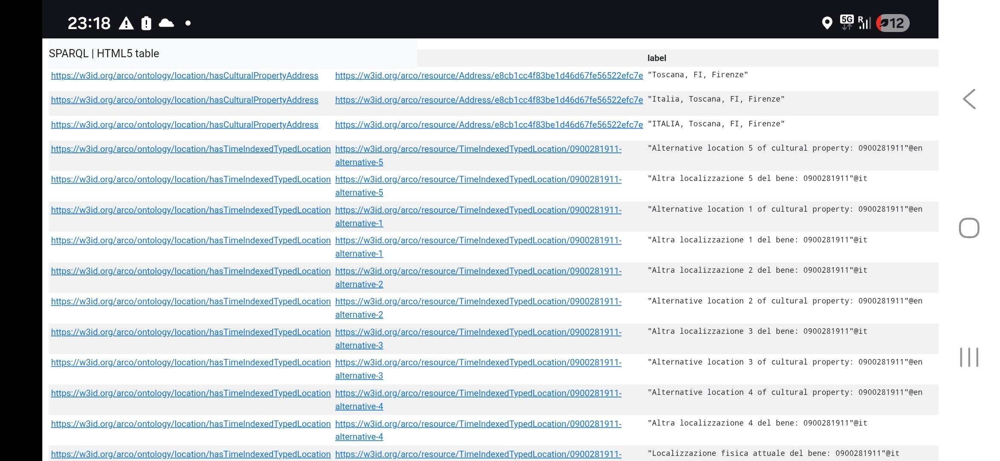

This two-paneled Menologio icon is one of the most notable works in the historic collection of 78 Russian icons acquired by the Medici family. It functions as a visual liturgical calendar of the Orthodox Church, divided into two panels corresponding to the two halves of the year.
The icon was created in a provincial Russian workshop between 1730–1750, modeled on an annual series of saints engraved in Moscow in 1730. The most important Christian feast, the Resurrection of Christ, appears prominently in both panels at the top center. The Menologio came to Florence during the Habsburg-Lorraine dynasty and is now permanently displayed at the Palazzo Pitti museum.
I started the process of identifying my specific Menologio by executing this query:
Result of this search was Menologio in the Arco database. However, I found out that there are two different links leading to two parts of my piece of art: first is icon panel from March to August (Link) and the second one is from September to February (Link).
I needed to identify the gaps and quickly found some. For example, the museum where the icon is located is not mentioned, only city of Firenze. Second one is that 2 different parts of one icon are not connected to each other.
As we can see from this screenshot, the first part of the icon is related only to itself, not to the second part which has this unique identifier: 0900281910.
To check I made two queries. One was to ask about whether there is a connection between Menologio and Palazzo Pitti.
This showed me all the locations connected to Menologio icon but there was no Palazzo Pitti among them. (link)

The second one was to check if the first panel of the icon was connected with the second one in the database.
This one also turned out empty (link).
| DeepSeek | Groq AI |
|---|---|
|
Zero-shot Prompt
Where is menologio icon located?
|
|
|
A Menologion icon (a calendar icon depicting saints for each day of the year) is located in a few notable places. Most prominently, a famous example is at the Monastery of Saint Catherine on Mount Sinai, Egypt. Another specific location is the Sampsonievsky Cathedral in Saint Petersburg, Russia. In this cathedral, a set of 12 large icons (one for each month) is displayed on the walls of the refectory: the first six months (January–June) are on the north wall, and the last six (July–December) are on the south wall. These icons typically serve as a visual calendar for the church year, illustrating the saints and feasts commemorated on each day.
|
Menologio (or Menologium/Menologion) icons are Eastern Orthodox liturgical calendar icons depicting saints and fixed feasts arranged by month/day (or the full year). They are physical painted panels (often tempera on wood), not software/app icons.
Notable locations of examples include:
|
|
Few-shot Prompt
You are an expert on Russian Orthodox icons and the collections of the Uffizi Galleries. Answer questions accurately and concisely, using only established art-historical facts.
Example 1: Q: What is Menologio? A: It is a pair of tempera-on-panel icons (inventory 1890 nn. 5954 and 5955) painted in a Central Russian workshop around 1730–1750. Together they form a Menologium, an Orthodox liturgical calendar showing the fixed feast days and commemorations of saints for the entire year. Each panel measures 70 × 54 cm. Example 2: Q: How is the year divided on the two panels? A: The first panel covers the months from September to February; the second covers March to August. This follows the traditional Byzantine liturgical calendar, which begins on 1 September rather than 1 January. The scene of Christ's Resurrection / Descent into Hell appears at the top centre of both panels because it is the most important feast. Now answer where is the icon from Uffizi Galleries located? |
|
|
The Menologio icon dating to approximately 1725–1749 is indeed in Palazzo Pitti in Florence.
📍 Specific Location It is part of the Museum of Russian Icons (Museo delle Icone Russe) located within Palazzo Pitti. The museum occupies four large ground-floor rooms with 17th-century frescoes, and the Menologio is considered one of the most significant works in the collection. 📜 Details of the Icon The Menologio is actually composed of two large panels that together form a calendar of Orthodox religious holidays. Structure: Each panel consists of 20 horizontal rows depicting sacred scenes and figures of saints, with each figure identified by an inscription. Content: It covers the religious festivals divided by semesters (September–February and March–August). Collection: It belongs to the Museum of Russian Icons' collection of 78 icons, which is the oldest such collection outside of Russia, assembled by the Medici and Lorraine families in the 18th century. |
The icon is located in the Museum of Russian Icons (Museo delle Icone Russe) within Palazzo Pitti in Florence.
Specifically, it is displayed in the four large ground-floor rooms overlooking the courtyard, which were restored and opened as a permanent exhibition space. |
|
Chain-of-Thought Prompt
Here is my step-by-step reasoning:
Step 1 — Identify the object. You asked about a Menologio icon dated ca. 1725–1749. From the earlier exchange, this corresponds to the pair of tempera-on-panel icons (inventory 1890 nn. 5954 and 5955) painted in a Central Russian workshop, forming an Orthodox liturgical calendar for the full year. Step 2 — Establish the owning institution. These icons belong to the Uffizi Galleries collection. The Uffizi Galleries is not a single building but a network of museums in Florence, including the Uffizi, Palazzo Pitti, and the Boboli Gardens. Step 3 — Determine the specific venue within that network. The Russian icons in the Uffizi Galleries' holdings — including the Menologio — are housed in the Museum of Russian Icons (Museo delle Icone Russe), which is located inside Palazzo Pitti, not the Uffizi building itself. Step 4 — Pinpoint the room. Within Palazzo Pitti, the Museum of Russian Icons occupies four large ground-floor rooms with 17th-century frescoes, situated around the courtyard. Conclusion: The Menologio icon is located in the Museum of Russian Icons, Palazzo Pitti, Florence — part of the Uffizi Galleries system. |
|
|
Here's a clear step-by-step explanation of the previous answer about the location:
Step 1: Identify the object The work in question is the Palazzo Pitti Menologio (also called Menologium), the pair of Russian Orthodox calendar icons with inventory numbers 1890 nn. 5954 and 5955. Step 2: Determine the owning institution These icons belong to the collections of the Uffizi Galleries in Florence. Step 3: Find the specific museum/section Within the Uffizi Galleries, the Russian icons (including the Menologio) are exhibited in a dedicated space called the Museum of Russian Icons. Step 4: Locate the physical building and floor The Museum of Russian Icons is installed on the ground floor of Palazzo Pitti (the Pitti Palace), which is part of the Uffizi complex. Step 5: Confirm the city and country Palazzo Pitti is in Florence, Italy. Final combined answer Therefore: The Palazzo Pitti Menologio is located in the Museum of Russian Icons on the ground floor of Palazzo Pitti (Uffizi Galleries) in Florence, Italy. This matches the established art-historical facts from the Uffizi's own documentation. |
Here is my step-by-step reasoning:
Step 1 — Identify the object. You asked about a Menologio icon dated ca. 1725–1749. From the earlier exchange, this corresponds to the pair of tempera-on-panel icons (inventory 1890 nn. 5954 and 5955) painted in a Central Russian workshop, forming an Orthodox liturgical calendar for the full year. Step 2 — Establish the owning institution. These icons belong to the Uffizi Galleries collection. The Uffizi Galleries is not a single building but a network of museums in Florence, including the Uffizi, Palazzo Pitti, and the Boboli Gardens. Step 3 — Determine the specific venue within that network. The Russian icons in the Uffizi Galleries' holdings — including the Menologio — are housed in the Museum of Russian Icons (Museo delle Icone Russe), which is located inside Palazzo Pitti, not the Uffizi building itself. Step 4 — Pinpoint the room. Within Palazzo Pitti, the Museum of Russian Icons occupies four large ground-floor rooms with 17th-century frescoes, situated around the courtyard. Conclusion: The Menologio icon is located in the Museum of Russian Icons, Palazzo Pitti, Florence — part of the Uffizi Galleries system. |
A possible solution to these information gaps would be the addition of RDF triples to connect objects and enrich the ontology.
For example, the property core:isRelatedTo could be used to establish relationships between two parts of the icon.
The second RDF triple connects the Menologio icon to Palazzo Pitti as location.